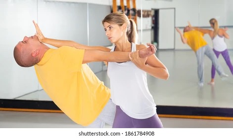
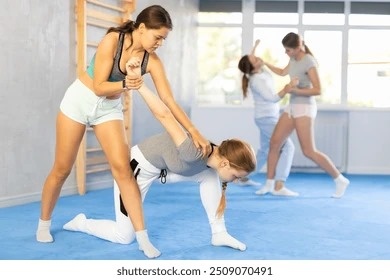

BEGINNERs:
-

Palm Strikes
Use the heel of your palm to strike an attacker’s nose or chin. Palm strikes are important because they allow you to deliver powerful blows without risking injury to your hand.
-

Escape Techniques
Escape techniques are crucial because they provide quick and effective ways to break free from an attacker and ensure your safety.
-

Using Pressure Points
Using pressure points is important because it can quickly incapacitate an attacker, giving you a chance to escape.